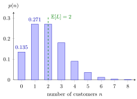

M/M/Infinity Queue¶
Definition¶
The queue has Poisson arrivals with rate and independent exponential service times with rate , and it assigns a free server to every arrival, so no job ever waits. It is the birth-death queue with
For every the stationary number of jobs in the system is Poisson with mean :
Interpretation¶
With ample servers nobody waits, so the number of jobs present is simply the number of service periods that overlap at a given moment. That number is Poisson, and its mean is the arrival rate times the mean service time.

The bars are the self-service shop of Example 1, with customers per hour and a mean stay of 10 minutes, so . One and two customers are equally likely, , and the shop is empty with probability . The dashed line marks the mean .
The recursion produces the terms of the exponential series , known from Taylor series, and this sum is finite for every . Hence there is no stability condition: the departure rate keeps pace with any load. The model is the limit of the Erlang B model, whose distribution is this Poisson distribution cut off at . Little's law confirms the mean: each job stays exactly its service time, so .
A common slip is to read "no waiting" as "no congestion measure". The queue is always empty, but still fluctuates, with variance , and its tail tells how many servers would almost always suffice.
Key Results¶
- in steady state, for all ; the number of busy servers is Poisson with parameter (Section 5.1 of the notes).
- and ; also , the variance of the Poisson distribution.
- and .
- The model arises from the queue (or the queue) as .
- Conversely, the Erlang B probabilities are for , with the Poisson probabilities above.
Examples¶
1. A self-service shop. Customers enter at per hour and shop for exponentially distributed times with mean 10 minutes, independently of each other, so per hour and . Then , , and . If the same customers had to pass a single server with service rate per hour, the queue would have and no stationary distribution; with ample servers the load is no problem at all.
2. From the loss model to ample servers. For , the Poisson probability of exactly eight jobs is . The Erlang B blocking probability with eight servers is this number divided by , that is, . When is close to one, cutting the Poisson distribution off at hardly changes it, and the and queues behave alike.
3. Doubling the arrival rate. In the shop of Example 1, doubling to per hour doubles to and leaves minutes unchanged. In an queue, by contrast, doubling the load from to multiplies by six, because jobs start to wait for each other.
Prerequisites¶
Related Concepts¶
- M/M/c Queue
- M/M/1 Queue
- Finite Calling Population
- Stationary-Probability Recursion
- Kendall's Notation
Sources¶
- Stochastic Operations Research · Week 4
- N. D. van Foreest, Sample Path Analysis and Simulation of Stochastic Systems, Section 5.1
Aliases: M/M/∞ queue, M/M/infinity, ample-server queue, infinite-server queue, self-service system Keywords: M/M/\infty, \mu(n) = n\mu, p(n) = \mathrm{e}^{-\lambda/\mu}(\lambda/\mu)^n/n!, \mathbb{E}[L] = \lambda\mathbb{E}[S], ample servers, Poisson number of busy servers, no waiting Symbols: infinity, lambda, mu, rho, sum
Last updated: 29 October 2026 20:42
M/M/Infinity QueueBirth-Death QueueErlang B ModelLittle's LawPoisson DistributionM/M/c QueueM/M/1 QueueFinite Calling PopulationStationary-Probability RecursionKendall's Notation